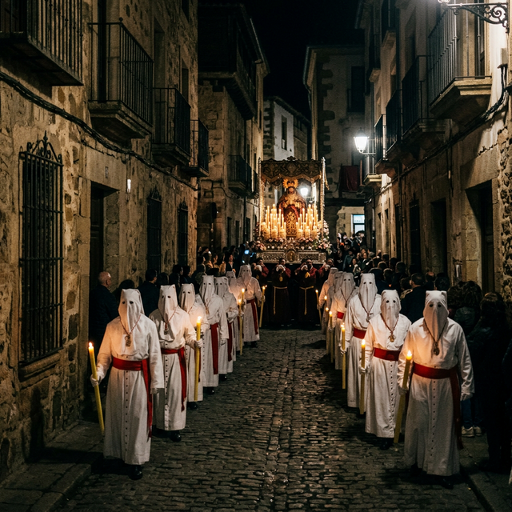
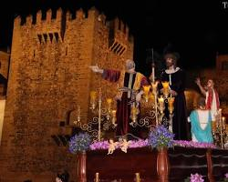
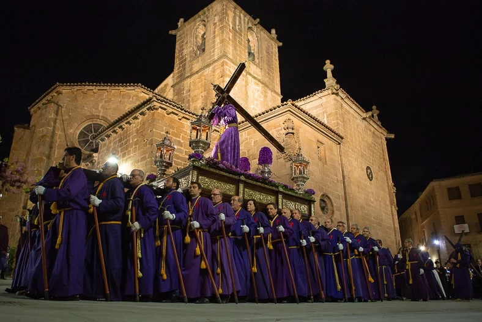
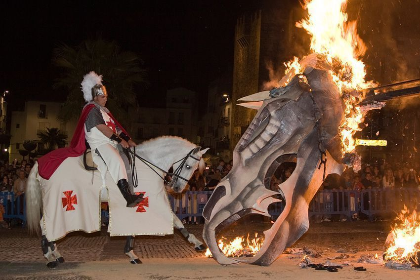
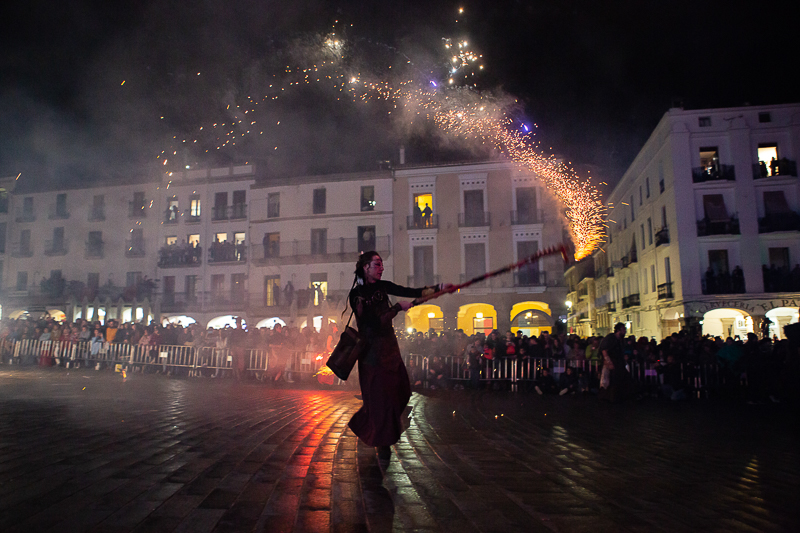
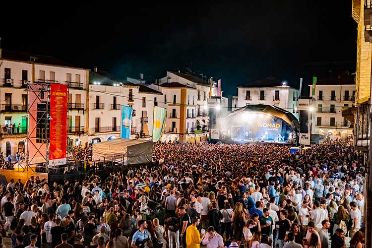

Cáceres en Vivo
La ciudad se transforma a lo largo del año con eventos que atraen a visitantes de todo el mundo.



Semana Santa (Marzo/Abril)
Declarada de Interés Turístico Internacional. El contraste de las cofradías desfilando en absoluto silencio por las estrechas calles medievales pone los pelos de punta.



Festividad de San Jorge (23 de abril)
Patrón de la ciudad. La ciudad se llena para presenciar la representación teatral de la leyenda de San Jorge y el dragón, culminando con la quema del dragón.

WOMAD (Mayo)
El Festival del Mundo de las Artes, la Danza y la Música llena las plazas del casco histórico de ritmos globales, talleres y un ambiente multicultural inigualable.